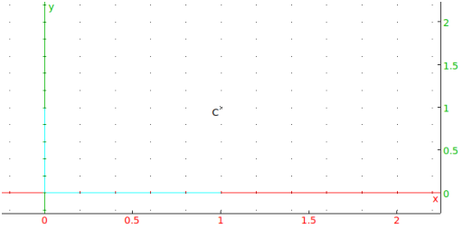
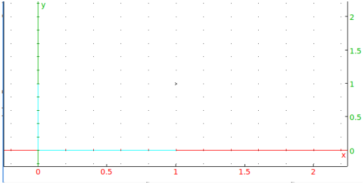
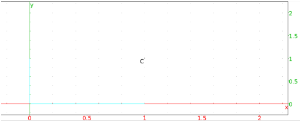

Input:
C:= point(1+i)
Output:

Input:
nodisp(C:= point(1+i))
Here, the point C is defined but not displayed. It is
equivalent to following the command with :;,
Input:
C:= point(1+i):;
To define a point as above and display it without the label, enter the
point’s name;
Input:
C
Output:

Alternatively, you can get the same effect by defining the point
within an eval statement:
Input:
eval(C:= point(1+i))
To later display the point with a label, use the legend
command:
Input:
legend(C,"C")
or:
point(affix(C),legend="C")
Output:

In this case, the string "C" can be replaced with any other string
as a label. Alternatively, redefine the
variable as itself:
Input:
C:= C
prints C with its label.